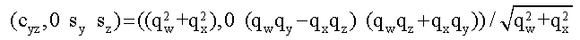

Twist and swing coordinates for 3D orientation are based on its decomposition into a two orthogonal rotation sequence. They sit between Euler angle decompositions into a three orthogonal rotation sequence and direct representations of the single shortest rotation axis/angle.
In the twist and swing decomposition, an orientation is achieved by a sequence of two rotations:
(1) a twist rotation about a selected axis and (2) a swing rotation about an axis in its perpendicular plane.
Hence, twist describes the DOF spin about the selected twist axis, while swing describes the direction in space of the twist axis. With two bodies involved, the twist and swing decomposition is based on a selected twist axis in both the parent and child; the twist axis in the parent acts as the central reference direction relative to which the swing direction of the child twist axis is measured.
Imagine the twist axis as a radius tracing out points on the globe as it swings and the central reference swing direction positioned towards the North Pole. A swing rotation plots a point from the North Pole to the target point by following the shortest path on the sphere - a line of longitude in this case.
The swing rotation axis lies in the plane of the equator 90 degrees east of the swing longitude. NOTE: The direction is computed from the cross product of the parent and child twist axes.
Now set a zero reference for twist as a given heading at the North Pole. This twist reference is transferred to other target points on the globe by maintaining the heading along the shortest path to the target point. This is an isotropic definition of twist in that it is independent of the swing direction to the target point.
The South Pole is a problem case because there is no unique single shortest path from the North Pole; all lines of longitude meet at both poles, therefore a 180 degree swing rotation around any arbitrary equatorial axis takes a point from the North to the South Pole. Twist cannot be defined and swing is redundant.
Twist can be specified and stored as an angle; however, performing the rotation requires trig functions to be evaluated. Therefore, it is more efficient to store a pre-computed trig function, which will be demonstrated later in this section.
Swing is parameterized by the two Cartesian coordinates of its rotation vector in the equator plane. The swing direction is inherent in the direction of the vector, i.e., the relative values of its two coordinates. The swing angle is encoded in the magnitude of the vector, i.e., its length as given by the norm of its two coordinates. The options of suitable trig functions for mapping angle to magnitude is covered below.
Note that swing is NOT parameterized by swing-angle and swing-direction, or latitude and longitude angles as a picture of the globe might seem to suggest; these are the natural coordinates for a pair of sequential Euler angle rotations rather than two parameters of a single rotation. They are singular at the origin; namely, the North Pole, where swing-angle is zero and swing-direction is redundant.
The two swing parameters can also be seen as components of the twist axis projected flat onto the equatorial plane. The equivalent rotation vector lays 90 degrees east of the projected axis. The projection is more general than just a shadow; it can be any suitable function for mapping angle to magnitude.
The angle itself is an obvious choice for the magnitude function; however, to execute the rotation requires costly sine and cosine evaluations. Below are four trig functions based on spherical projections in order of increasing suitability for numerical work.
The cross product of the parent and child twist axes is a vector in the direction of the swing rotation axis. Its magnitude is the sine of the swing angle. This corresponds to parallel projection form, a light source far above the North Pole. However, note that the shadow of the twist axis on the equatorial plane does not distinguish a North hemisphere point from its reflection through the equator in the South hemisphere.
The sine function is not a suitable magnitude-mapping function because it only works for angles up to 90 degrees.
This choice is of more theoretical than practical use.
A light source located at the South Pole maps all North hemisphere points to inside the equator and South hemisphere points to outside the equator; however, as the South Pole is approached, the image goes to infinity. This is the stereographic projection. Its magnitude is the tangent of half the swing angle. This projection is the unique conformal projection between the sphere and the plane in that it preserves all angles. Circles on the sphere generally map to circles on the plane except for great circles which map to straight lines.
Instead of the familiar 2-sphere, i.e., a 2D spherical surface embedded in 3D space, imagine the 3-sphere, the space inhabited by unit quaternions, as a 3D spherical surface embedded in 4D space. In fact, only half the 3-sphere is needed because diametrically opposite points represent the same orientation. The tan-half-angle projection is the central projection from the hemi-3-sphere onto the tangent (hyper) plane at its pole! In the central projection, the light source is placed at the center of the sphere.
This choice corresponds to the magnitude of the vector part of the quaternion which makes it convenient for computations. It would seem that accuracy could be lost as the angle approaches 180 degrees, because the gradient approaches zero, but this can be overcome by generating the scalar part of the quaternion, i.e., cos-half-angle, a computation that requires a square root.
This is the parallel projection from the hemi-3-sphere of quaternions into 3D space.
This corresponds to the stereographic projection from the quaternion sphere into 3D space. It is the unique conformal projection from the space of rotations into Euclidean space.
It is easy to compute the quaternion (cos-half-angle and sin-half-angle) from tan-quarter-angle.
Do not confuse swing and twist with axis-and-angle. Both describe the direction of an axis and an angle of rotation about that axis. The difference is in the definition of the axis.
The axis-and-angle axis is the axis of the single shortest rotation. It is not fixed in the world or the body; its arbitrary direction in space is decided by the difference between reference and required orientations. The angle is the magnitude of the single shortest rotation between the orientations.
The twist and swing axis is a physical axis fixed in the body. Its direction is specified by a swing rotation about an axis in the perpendicular plane. The twist angle specifies a second, orthogonal, decoupled rotation about the axis.
This section shows how the twist and swing decomposition is done with quaternion mathematics.
The quaternion representing the general 3D orientation is written below,
Qxyz = (Qw, Qx, Qy, Qz)
with 'w' indexing the scalar and 'x','y','z' indexing the components of the vector.
If the x-axis is the special axis in defining twist and swing, then the decomposition is
computed in quaternion multiplication, Qxyz=Qswing Qtwist, with the following:
The proof begins by writing the quaternion representing the twist rotation around the x-axis as,
Qtwist = Qx = (Cx, Sx, 0, 0)
and the quaternion representing the swing rotation around an axis in the yz-plane with the following:
Qswing = Qyz = (Cyz, 0, Sy, Sz)
Below, 'c' represents the scalar and 's' represents the vector components in relation to the cosine and sine of the half angles:

Remember that generally so
we have
so
we have
Using quaternion multiplication, the rotations compose right-to-left just like rotation matrices, shown below:

The rotations are treated as active rotations around global fixed axes rather than the current local axes. Expanding the quaternion multiplication looks like this:
Extracting the twist quaternion from this is straightforward once you see that Qw^2 + Qx^2 = Cyz^2
Then the swing quaternion is extracted by inverting (conjugating) the twist quaternion and multiplying

Expanding the quaternion multiplication gives

which completes the proof.